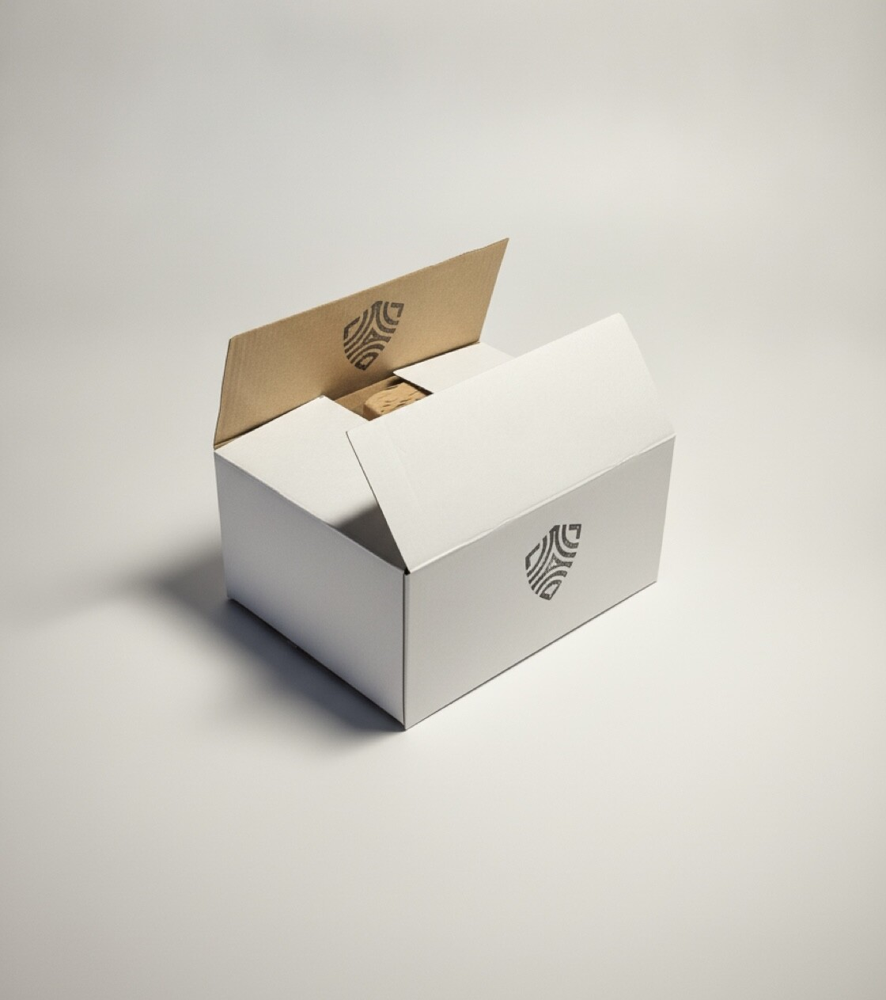
The DIGI node is a sensor board built around an ESP32 and a Meshtastic LoRa radio. AntiHunter, its firmware, listens to the Wi-Fi and Bluetooth around it and reports what it finds. You control the node from its web UI (Full build), by sending it text commands over LoRa from any Meshtastic radio on your channel, or by typing the same commands on its USB serial port. It needs no internet connection, cloud account or server.
This guide takes you from the box to a tuned node in the field. A label marks each section that applies to one tier only.
1. Regulated 5 V only. Power the PCB from USB, a bench supply set to 5 V, a DC-DC regulator, or the UPS board. Never connect 18650 cells, a battery pack, or a vehicle supply directly to the board. Unregulated input permanently damages the modules. Voltages under 4.5 V cause instability.
2. Never power the LoRa radio without its antenna. Transmitting into an open port can destroy the radio's power amplifier. Fit the LoRa antenna, or the U.FL pigtail plus antenna, before you power the node.
3. One USB cable at a time. The ESP32 and the Meshtastic radio share the PCB's power rails, and with both USB ports plugged in one board back-feeds the other. Unplug one before you plug in the other.
| Tier | What is in the box | What you still do |
|---|---|---|
| 1 · Fully Assembled Unit | Built, tested, radio flashed. | Fit two 18650 cells, screw on the antennas (§2), flash AntiHunter (§5), set the radio region and channel (§7). |
| 2 · Complete Parts Kit | All parts, unassembled and unflashed. | Assemble it (§3), flash Meshtastic on the radio (§7.1), flash AntiHunter (§5) and configure. |
| 3 · Populated PCB | Assembled and tested, radio flashed. | Attach the antennas (§2), supply power, flash AntiHunter (§5), set the radio region and channel (§7). |
| 4 · Bare PCB | One unpopulated board. | Source the BOM, assemble (§3), flash Meshtastic on the radio, fit an SD card, flash AntiHunter (§5). |
The ESP32 ships empty on every tier, so you flash AntiHunter yourself.
Open the box on a static-safe surface and check it against your tier before you power anything.
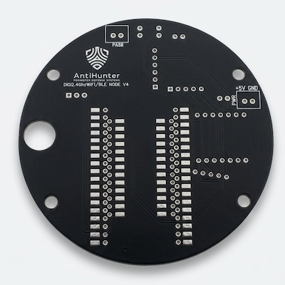
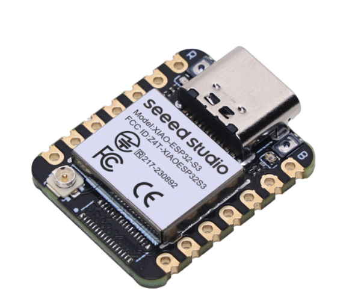
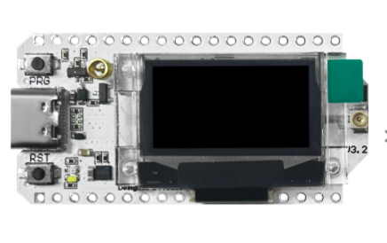
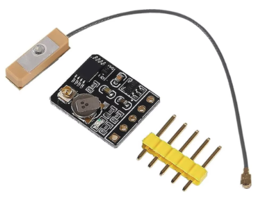
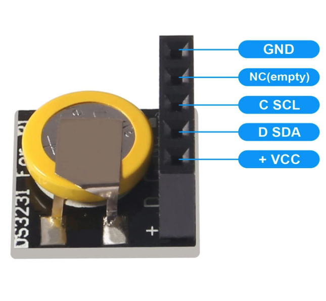
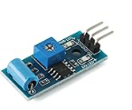
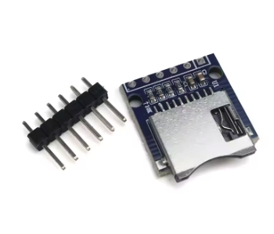
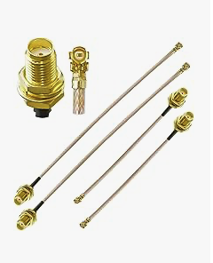
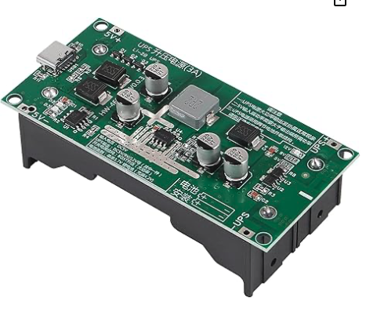
The node draws roughly 160 mA idle and 600 mA while scanning. Inside the enclosure the UPS board provides the regulated 5 V. Outside it, use a USB-C adapter, a bench supply set to 5.0 V, or a DC-DC regulator.
Do not connect batteries directly. Do not exceed 5 V. Do not use unregulated sources. A 2 A fast-blow fuse in the battery line, in series with the switch wiring, is optional and not supplied with any tier.
The ESP32 runs warm under load and the GPS module gets hot while it searches for satellites. Both are normal. The node works without the fan and the thermal switch.
U.FL connectors are small and break if pressed on at an angle.
| Antenna | U.FL set (tiers 2 and 3) | SMA set (tiers 1 and 2) | Connects to |
|---|---|---|---|
| 2.4 GHz Wi-Fi / BLE | Flat black film, printed 2.4G | Shorter rubber duck, 6 dBi | XIAO ESP32-S3 U.FL socket, or its SMA bulkhead |
| LoRa (region specific) | Coiled black whip | Longer duck, marked 868 MHz (EU), 915 MHz (US) or 923 MHz (Asia) | Heltec / T114 U.FL socket, or its SMA bulkhead |
| GPS | Passive ceramic patch, supplied with the GPS module | Active helix, Fully Assembled Unit only | GPS module U.FL socket, or the SMA bulkhead in the battery housing |
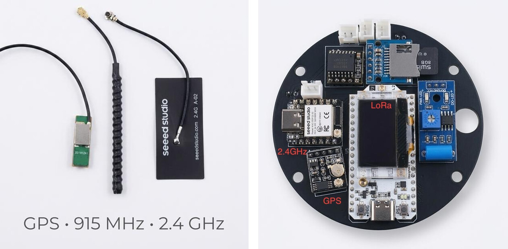
On an enclosed build, decide which bulkhead carries LoRa and which carries Wi-Fi, then wire every node the same way. A spare antenna then always fits the port you expect.
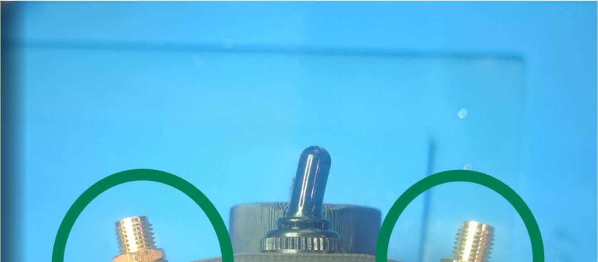
Use the same antenna type and cable length on every node. Triangulation assumes the nodes hear the world the same way, and mismatched antennas skew the result.
The pigtail's snap connector seats on each module's socket with a click.
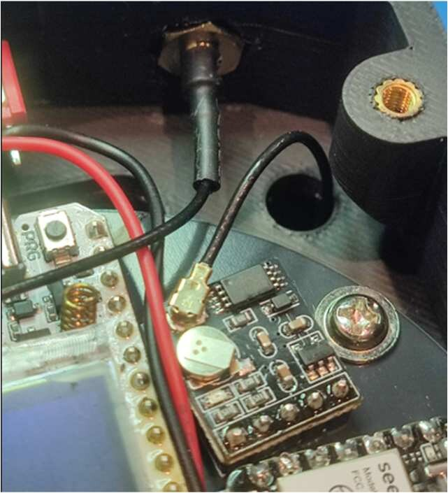
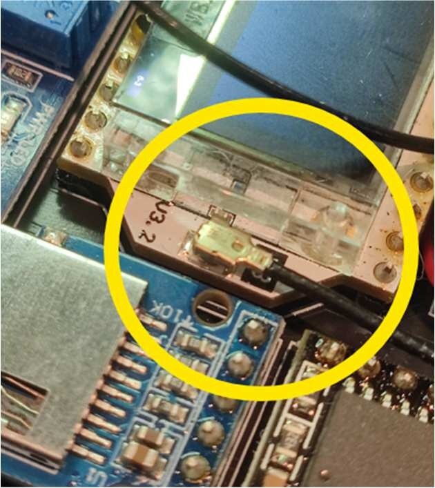
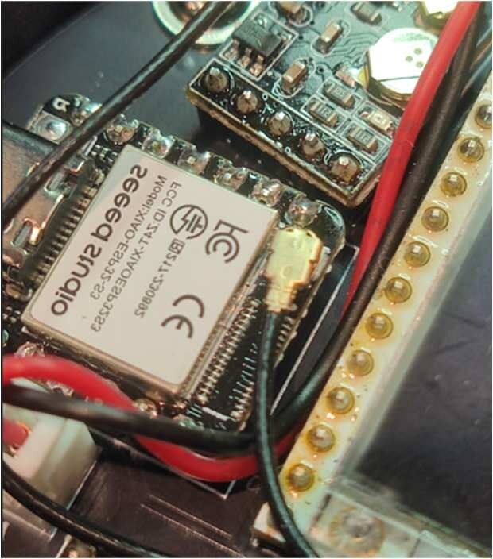
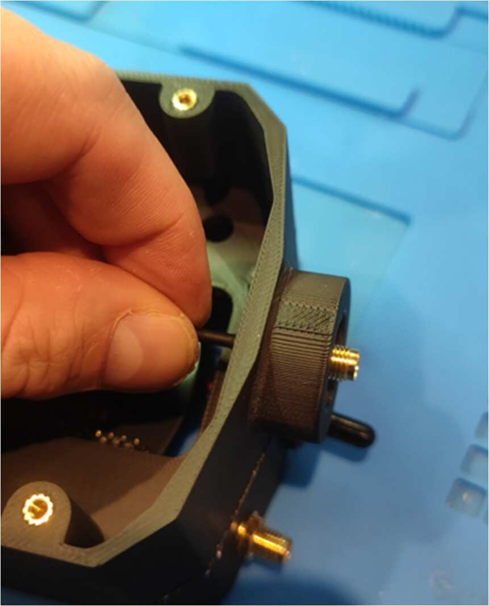
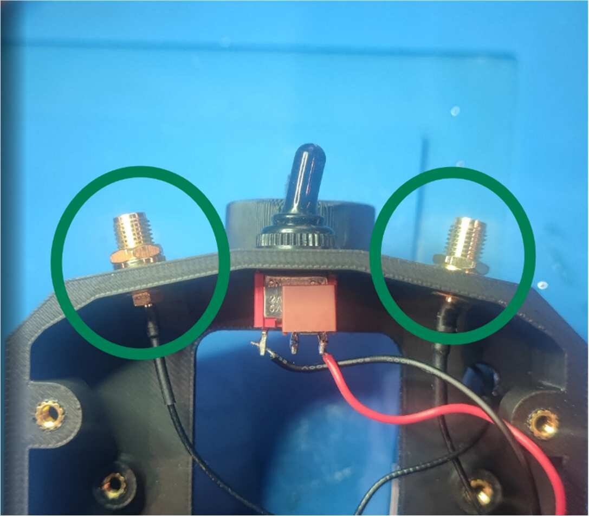
Put silicone grease on the SMA threads and the TPU seals to keep water out.
Tiers 1 and 3 arrive soldered. Skip to §4.
The illustrated assembly manual covers soldering, connectors, the enclosure, the SD card and the power wiring.
hw/Prototype_STL_Files/Antihunter-DIGINODE-AssemblyManual.pdf
github.com/lukeswitz/AntiHunter, in the hw folder
Finish it, then continue at §4.
Connect a USB-C cable to the ESP32 only and open a serial monitor at 115200 baud. The firmware prints its banner and version, then the result of each hardware check: SD card, GPS, RTC, vibration sensor. It names any module that failed to start. On Full firmware a Wi-Fi access point named Antihunter also appears within a few seconds.
On Full firmware, System tab → Diagnostics reports each subsystem:
Every flasher sets the DS3231 clock: pio upload, the command-line script, and the web flasher's Connect & Configure step. With a GPS fix it re-syncs at most once an hour, and only when it is more than 1 s off. A coin cell keeps it running without power. You can also set it from USB serial with SETTIME:<unix seconds>. The clock keeps UTC. Logs, capture file names, results and heartbeats show local time, with daylight saving, once GPS places the node in one of these zones: Hawaii, Alaska, Arizona, Saskatchewan, US/Canada Pacific, Mountain, Central and Eastern, UK/Ireland, Central Europe, Eastern Europe. Elsewhere, and before the first fix after boot, they show UTC.
Flash the firmware first (§5), then set the clock and configure the radio. Flashing with Erase Device checked clears saved settings.
Choose a build and flash it to the ESP32.
Both builds have the same detectors, mesh commands and scan engine. The difference is whether the node hosts a Wi-Fi access point.
| Full | Headless | |
|---|---|---|
| Control | Web UI and HTTP API over its own AP, plus serial and mesh | Serial and mesh only |
| RF footprint | The AP beacons continuously, so the node is discoverable as a Wi-Fi network | Never beacons |
| Results | Cards in the Results tab | Text in /last_results.txt |
| SD logging | Identical on both builds (§9.14) | |
| Device database | /devicedb.jsonl, browsed in the Data tab under All Discovered Devices | The same file. Clear it with DEVICE_DB_CLEAR (§11) |
Use Full for bench work and first setup, then reflash to Headless for covert and long-term field deployments. A reflash keeps settings unless you check Erase Device.
| Channel | Source | Use it when |
|---|---|---|
| Stable | main branch | Default. Field deployments. |
| Beta | beta branch | New features first, less tested. |
| Experimental | ESP32-C5 builds (2.4 + 5 GHz) and RadarNode | Only on C5 hardware. The flasher asks you to acknowledge these are test builds. |
Check it when upgrading from firmware older than v0.9.2, or when you want to clear saved settings. Otherwise leave it off.
curl -fsSL -o flashAntihunter.sh \ https://raw.githubusercontent.com/lukeswitz/AntiHunter/main/Dist/flashAntihunter.sh chmod +x flashAntihunter.sh ./flashAntihunter.sh
The script asks for a release channel, then Full or Headless. Flags: -c sets device parameters during the flash, -e erases flash first, -l lists available firmware, -f FILE flashes your own .bin.
git clone https://github.com/lukeswitz/AntiHunter.git cd AntiHunter pio device list # find the port pio run -e AntiHunter-full -t upload # Full build pio run -e AntiHunter-headless -t upload # Headless build pio device monitor -e AntiHunter-full # watch it boot pio run -e AntiHunter-full -t erase -t upload # clean flash
Environments: AntiHunter-full and AntiHunter-headless for the ESP32-S3, and AntiHunter-c5-full and AntiHunter-c5-headless for the ESP32-C5 on the feat/c5 branch.
The default AP name and password are public. Until you change them (§8.1), anyone nearby can join the node.
The XIAO ESP32-C5 replaces the S3 on the same board and adds 5 GHz scanning. Those builds are on the flasher's Experimental channel. The RadarNode variant pairs a 24 GHz radar with the same mesh: it detects a moving target, then sweeps Wi-Fi and BLE to record which devices were present (see docs/RADARNODE.md).
The web flasher serves the current build of the channel you pick, so re-running it updates the node. The node never contacts the internet or updates itself.
The node keeps settings in its built-in memory and copies them to the SD card, so they normally survive an update, a reboot and a corrupted copy. Erase Device clears the built-in memory.
Flash the other channel, or build an earlier tag with PlatformIO. If a downgrade misbehaves, erase and flash clean, then reconfigure.
Run one firmware version across a mesh. Message formats can differ between versions.
The LoRa mesh carries commands and alerts between your radios and your nodes. It is optional. A single node works on its own.
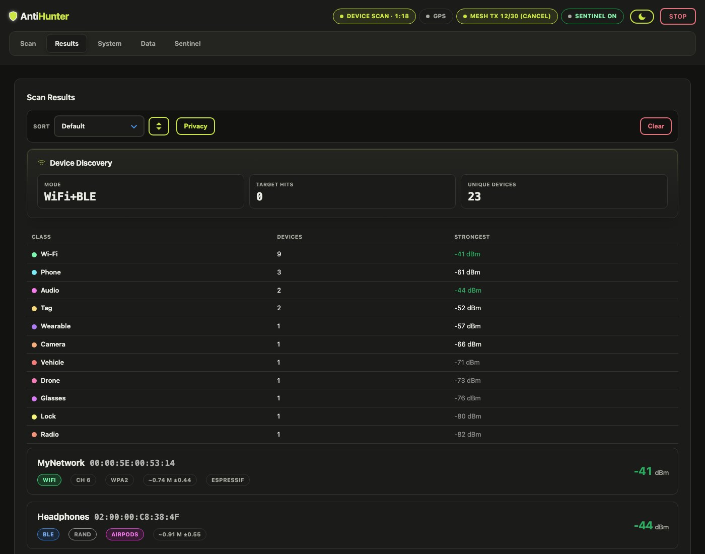
Tiers 1 and 3 arrive with the radio on the latest stable Meshtastic and the serial link set as in the table below. The screen blanks after 1 s and the status LED is off. Do not redo it.
Tiers 2 and 4: connect the Heltec V3.2 (preferred) or T114 on its own USB and flash the latest stable Meshtastic from flasher.meshtastic.org. Then set the serial module in the Meshtastic app or web client, or with the script in §7.2:
| Setting | Value |
|---|---|
| Serial module | Enabled |
| Mode | TEXTMSG |
| Baud | 115200 |
| Pins, Heltec V3 | 19 RX / 20 TX |
| Pins, T114 | 10 RX / 9 TX |
Without this the node and the radio cannot talk.
An UNSET region makes the radio receive-only. Set the region for the country you are in. It determines the frequency band and the legal power and duty-cycle limits.
Plug the radio in on its own USB, not the ESP32, and run:
pip3 install 'meshtastic[cli]' pyserial python3 scripts/meshtastic_config.py
With no arguments it prints the current settings and opens an interactive menu. Non-interactive equivalent:
python3 scripts/meshtastic_config.py --serial on --board heltec-v3 \
--screen off --led off --ble off --region US
| Option | What it does |
|---|---|
| --port | Serial port, auto-detected if omitted |
| --board heltec-v3 | t114 | Sets the serial-module pins for your board |
| --region | LoRa region, e.g. US |
| --serial on | off | The node link: TEXTMSG at 115200 on the board's pins |
| --screen on | off | SECS | off blanks after 1 s, or give a timeout in seconds |
| --led on | off | Status LED heartbeat |
| --ble on | off | Bluetooth radio |
| --pin NNNNNN | none | random | BLE pairing: fixed 6-digit PIN, none, or random |
The Meshtastic phone app or web client can apply the same settings.
Meshtastic defaults to a public channel with a well-known key. Anyone in radio range running stock firmware can read your commands, detections and coordinates on it. Before you deploy:
python3 scripts/meshtastic_config.py --screen off --led off.--pin NNNNNN (6 digits, or none), because random shows the PIN on the screen.Commands and detections are ordinary Meshtastic text messages. Pair the radio to the Meshtastic app over Bluetooth or Wi-Fi and send @node COMMAND messages, or use the Meshtastic ATAK plugin or an MQTT gateway node.
Do this on the bench before you deploy the node.
Node ID. Set it in the web UI or with @AH01 CONFIG_NODEID:AH02. It prefixes every mesh message the node sends. For the clock, see §4.3.
System tab → Settings → Scanning → Scan timing → Profile sets the whole timing profile at once. Start on Balanced. Picking a profile also resets the Wi-Fi channel list to 1 to 11.
| Preset | Wi-Fi chan time | Wi-Fi scan int | BLE scan int | BLE scan dur | RSSI | Use case |
|---|---|---|---|---|---|---|
| Relaxed | 300 ms | 5000 ms | 6000 ms | 3000 ms | −80 dBm | Low power |
| Balanced | 160 ms | 3000 ms | 4000 ms | 2000 ms | −95 dBm | General use (default) |
| Aggressive | 110 ms | 1500 ms | 2000 ms | 1000 ms | −100 dBm | Fast detection, high coverage |
| Custom | User-defined | Fine-tuned | ||||
Every capability runs on the node itself. One scan mode runs at a time.
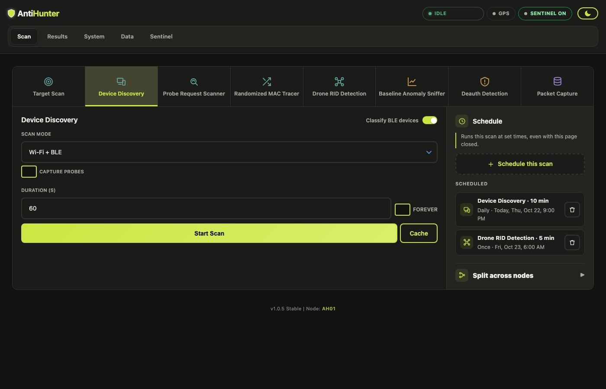
Target Scan watches for the devices on your Targets list and sends an alert when one appears. A target is a full MAC address, an OUI (the first three bytes of a MAC, which matches every device from one maker) or an SSID (a Wi-Fi network name).
In the web UI: Scan tab → Device Discovery card → Targets, enter one target per line and save. Set Mode, Duration (s) or Forever, and press Start Scan. Over mesh:
@ALL CONFIG_TARGETS:AA:BB:CC:DD:EE:FF|11:22:33|MyNetwork @ALL SCAN_START:2:300:1..11
| Value | What it means |
|---|---|
| CONFIG_TARGETS: list | Replaces the whole Targets list. Separate entries with |. |
| 2 | Mode: 0 Wi-Fi, 1 BLE, 2 both. |
| 300 | Run time in seconds, 0 to 86400. 0 runs until STOP. |
| 1..11 | Wi-Fi channels to sweep: a list (1,6,11) or a range. This field is required. The node rejects SCAN_START:2:300. Use FOREVER here instead to run until stopped on channels 1 to 11. |
Alert: AH01: Target: MAC RSSI:dBm Type:WiFi|BLE [Name:name] [GPS=lat,lon] [V=vendor] [C=class]. RSSI is signal strength in dBm. V= is the first word of the maker's name, sent when the MAC is not randomized. C= is the BLE class (§9.2).
With Movement checked, a target card shows Getting closer or Moving away when the signal has clearly risen or fallen over the last minute: at least 6 sightings over 15 s, a change of at least 6 dB, and a t-statistic of at least 3 (a measure that the trend is not noise). Otherwise it shows Measuring or Steady.
Lists every Wi-Fi and BLE device nearby with signal strength, channel and name. Run it first at a new site. In the web UI, pick Device Discovery (second card on the Scan tab), set Scan Mode and duration, and press Start. Check Capture Probes to fill the probe database at the same time.
@ALL DEVICE_SCAN_START:2:300:+PROBE
Mode and run time work as in §9.1. +PROBE also records probe requests, and CH1,6,11 limits the Wi-Fi channels. The extra fields can come in any order.
Split across nodes. Scan tab → Device Discovery → Split across nodes runs one scan across the nodes you check. Split by Radio makes nodes alternate Wi-Fi and BLE, and Channel gives each node its share of the channel list. Set Duration (min) and press Start split scan.
BLE classes. The Classify BLE devices checkbox is on by default. It labels each BLE device by what it advertises: an Apple service (AirDrop, Handoff, AirPods, Find My), or a class and maker such as Wearable-Garmin, Tag-Tile, Vehicle-Tesla or Drone-RemoteID. Results and mesh messages carry the label as C=. Turning it off saves processor time and memory. BLE_CLASSIFY:0 turns it off, and BLE_CLASSIFY:1 turns it on.
Listens for the probe requests devices send while looking for networks they know, and records the network names each device asks for. Pick Probe Request Scanner in the scan list. Check Broadcast All Probes (mesh) to send every probe over the mesh instead of only target hits.
@ALL PROBE_START:2:300:+ALL @ALL PROBE_STOP
Mode and run time work as in §9.1, except that a run time of 0 counts as 1 second here. Add :FOREVER to run until stopped. +ALL sends every probe over the mesh.
Hit: AH01: PROBE_HIT MAC [Randomized|maker] RSSI=dBm CH=N [SSID="net" [GHOST]]. CH is the Wi-Fi channel. Ghost SSID detection adds GHOST when no access point nearby answers for the probed name.
The node learns which devices belong at a site, then reports what is new, what returns, what changes signal strength and what disappears. In the learning phase the node records devices and sends no alerts. Its length is the Baseline setting: 5, 10 or 15 minutes, with 5 as the default. In the monitoring phase the node alerts on changes. Its length is Monitor (s) in the web UI, or the run time in the mesh command.
@ALL BASELINE_START:900 @ALL BASELINE_STATUS
900 is the monitoring time in seconds, from 60 to 86400. The node raises a shorter value to 60. :FOREVER or 0 monitors until stopped. The mesh command uses the Baseline learning time stored on the node. BASELINE_STATUS reports whether it is scanning, whether learning has finished, the device and anomaly counts, and the phase. Phase1 is INACTIVE, ACTIVE or COMPLETE.
Options on the Scan tab when you pick Baseline Anomaly Sniffer:
| Setting | What it does | Range, default |
|---|---|---|
| RSSI | Devices weaker than this raise no anomalies. | −40 to −80 dBm, −60 |
| Baseline | Length of the learning phase. | 5, 10 or 15 min, 5 |
| Monitor (s) | Length of the monitoring phase. | 0 to 86400 s, 300 |
| RAM Cache | Devices kept in memory (1500 without an SD card). | 200 to 500, 400 |
| SD Device Storage | Devices kept on the SD card. | 1000 to 100000, 50000 |
| Marked Absent (s) | Time a device must be unseen before it counts as gone. | 30 to 600 s, 120 |
| Seen Reappear (s) | Window after a disappearance in which a return raises an alert. | 60 to 1800 s, 300 |
| RSSI Variation dB | Signal change that counts as significant. | 5 to 50 dB, 20 |
Alerts: ANOMALY-NEW (a device not in the baseline), ANOMALY-RETURN (a gone device came back), ANOMALY-RSSI (signal moved by the RSSI Variation) and DEVICE_DISAPPEARED.
Compare from now. Press this button once monitoring starts, or send @ALL BASELINE_WATCH over mesh. The reply BASELINE_ACK:NOT_RUNNING means no baseline is running. From then on the node tracks what is new, what is gone, and what moved closer or away. Full shows the result in a Since section in Results. Headless prints the device list to serial and sends BASELINE_WATCH: New=<n> Gone=<n> Moved=<n> Both=<n> over mesh.
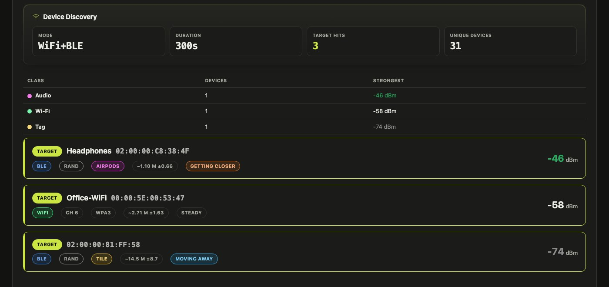
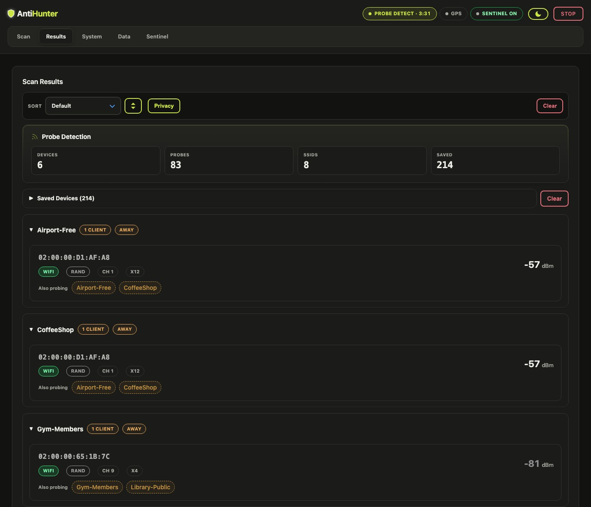
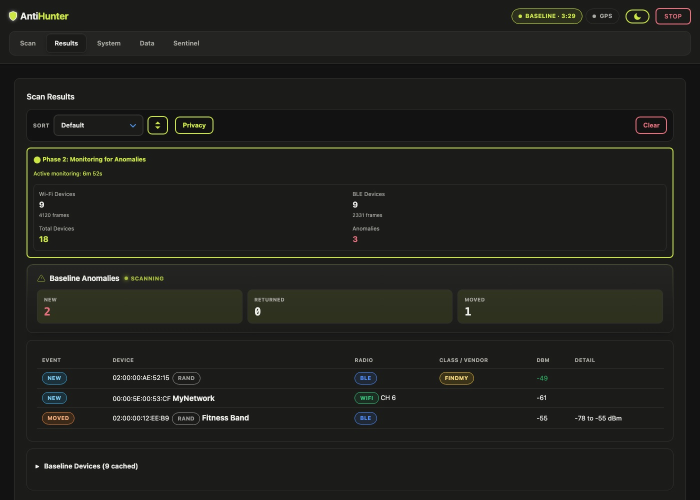
Modern phones rotate their MAC address to defeat tracking. This experimental mode links rotating MACs to one identity using behavioral signatures, and reports the identity instead of the address. Pick Randomized MAC Tracer in the scan list.
@ALL RANDOMIZATION_START:2:300
Mode and run time work as in §9.1. The run time defaults to 60 if you leave it out. The node sends IDENTITY: messages. Treat them as a lead, not proof.
Detects deauthentication and disassociation frames, which disconnect a client from an access point, and tracks their source. Pick Deauth Detection in the scan list.
@ALL DEAUTH_START:300
Alert: AH01: ATTACK: DEAUTH|DISASSOC [BROADCAST|TARGETED] SRC:MAC DST:MAC RSSI:dBm CH:N R:reason. SRC is the sender, DST the target, CH the channel and R the IEEE reason code. The code is context only: codes 1, 2, 6 and 7 occur in normal traffic.
Sentinel is the node's threat detection. It detects Wi-Fi attacks and the tools that run them: deauth, beacon, auth and association floods, SAE denial of service, karma and evil-twin access points, probe floods, and handshake or PMKID capture attempts. It also detects interference, disruption of the node's Meshtastic channel, attack devices such as a Pwnagotchi, and Meshtastic and MeshCore radios. It names the tool where a frame carries a recognizable template. Control it on the Sentinel tab. Start Sentinel in the top bar starts and stops it. Under Listening → Radio, pick Defend this AP or Scan all channels. Start on boot starts it after a reboot.
@ALL SENTINEL_ON @ALL SENTINEL_MODE:scan @ALL SENTINEL_BOOT:1 @ALL GROUP:dos:on @AH01 SENTINEL_STATUS @AH01 INCIDENTS:50
| Command | What it does |
|---|---|
| SENTINEL_ON | Starts Sentinel. SENTINEL_OFF stops it. |
| SENTINEL_MODE:scan | scan hops the configured channels. defend stays on the node's own access point channel. Headless has no access point, so use scan. |
| SENTINEL_BOOT:1 | 1 starts Sentinel at power-on, 0 does not. |
| GROUP:dos:on | Turns a detector group on or off: dos, rogue, recon, physical, mesh, lora or all. |
| SENTINEL_STATUS | Reports en= (you enabled it) and run= (it is running now). |
| INCIDENTS:50 | Prints the newest 50 incidents (1 to 200, default 20) as JSON on USB serial. The mesh reply is only the length. INCIDENTS_CLEAR deletes the log. |
Deauth flood, beacon flood and auth flood detection are always on. Their mesh_deauth, mesh_beacon and mesh_auth switches only decide whether the alert goes out over the mesh. Sentinel listens to Wi-Fi, plus Bluetooth while LoRa mesh radio detection is on. DETECT_CFG changes individual detectors and thresholds with a JSON object of up to 230 characters, for example DETECT_CFG:{"karma":true,"pmkid_window":5000}. The Sentinel tab sets the same keys. Each key's meaning, range and default are in docs/mesh-commands.md in the repository.
Karma bait is the only Sentinel detector that transmits Wi-Fi: a probe request every 8 seconds to bait a karma access point into answering. It is off by default. Turn it on with GROUP:rogue:on or the Karma switch on the Sentinel tab, and only where transmitting is lawful.
This detector finds Meshtastic and MeshCore radios by Bluetooth. It is off by default because it adds a Bluetooth scan. Turn it on in the LoRa Mesh Radios card or with GROUP:lora:on. It also finds your own nodes' radios. Add their MACs to the allowlist.
This mode learns each channel's noise floor for 60 seconds. It then alerts when the noise floor rises 8 dB, or when a busy channel goes quiet. It is off by default. Turn it on with the Interference Baseline switch or DETECT_CFG:{"jam_baseline":true}. Turn it off and on after you move the node.
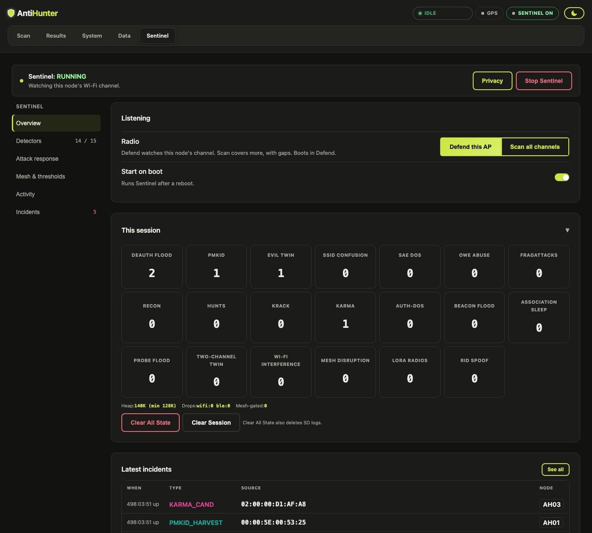
Sentinel tab → Attack response → On confirmed attack picks what runs when a detector confirms an attack that has a source MAC. The choices are Triangulate attacker, Packet capture to SD, Device discovery, Probe requests and Drone RID. Each has its own duration, from 10 to 3600 s. The default is 120 s for the capture and 60 s for the others. Checked actions run top to bottom, one at a time, as the radio frees up. If the radio never frees, the node drops the queue after 15 minutes. Over mesh, ATTACKER_TRILAT:1 turns the triangulation response on and ATTACKER_TRILAT:0 turns it off. It is off by default, and ATTACKER_TRILAT_STATUS reports it.
The same panel sets the auto-capture limits for the auto_ files these actions write. The node deletes the oldest to stay inside the limits and never touches manual captures. §9.11 sets the maximum size of one capture.
| Setting | What it does | Range, default |
|---|---|---|
| Auto-capture budget | Most space all auto_ files may use together. | 16 to 262144 MB, 512 |
| Keep free | Free space the card must keep. | 0 to 262144 MB, 256 |
Over mesh, PCAP_AUTO:512,256 sets budget and keep-free in MB. PCAP_AUTO alone reads them.
Detection pauses while each action runs, so keep the durations short on a site that trips often.
Identifies drones that broadcast Remote ID over Wi-Fi beacons, Wi-Fi NAN and BLE. It reads the ODID / ASTM F3411 and French ID formats. It reports the serial or registration number, position, altitude, speed and, when sent, the operator's location. Pick Drone RID Detection in the scan list.
@ALL DRONE_START:300
The node sends DRONE: once per appearance. DRONE_LOST: follows 120 s after its last beacon.
Several nodes each report the signal strength of one target MAC, and the coordinating node fits a position. It needs at least three nodes with valid GPS fixes and matched antennas. In the web UI, check Triangulate in the Device Discovery card, enter the Target MAC, pick the RF Environment, set Distance Tuning and press Start Scan.
@AH01 TRIANGULATE_START:AA:BB:CC:DD:EE:FF:60:2:1.0:1.0 @AH01 TRIANGULATE_RESULTS @ALL TRIANGULATE_STOP
| Value | What it means |
|---|---|
| AA:BB:CC:DD:EE:FF | The target MAC, or an identity such as T-1A2B from the Randomized MAC Tracer. |
| 60 | Run time in seconds. The node raises values under 10 to 10 and caps them at 3600. |
| 2 | RF environment (path-loss model): 0 open sky, 1 suburban, 2 indoor (default), 3 indoor dense, 4 industrial. A wrong choice skews every distance. |
| 1.0, 1.0 | Wi-Fi and BLE distance multipliers, 0.1 to 5.0 (default 1.0). Below 1.0 puts the estimate closer and above 1.0 farther. Use them to correct a known bias. |
Send TRIANGULATE_START to one node. That node coordinates and tells the others. TRIANGULATE_RESULTS asks it for the result, and TRIANGULATE_STOP ends the run. Results arrive in three messages. T_D: is one node's data, T_F: is the final fix with confidence and uncertainty, and T_C: marks the run complete with a map link. TRIANGULATE_RESULTS:NO_DATA means no node has reported yet.
Calibrate each node for better distances. Place a Wi-Fi access point or BLE device a measured distance from the node, then send the command below to that node, or use System → Settings → Scanning → Distance calibration. The node listens for 30 seconds, replies CALIBRATE_DONE, and keeps the result after a reboot and an RF environment change. Send CALIBRATE_RESET when you move the node.
@AH01 CALIBRATE:AA:BB:CC:DD:EE:FF:5 @AH01 CALIBRATE_RESET
Alerts when someone moves nearby, even through walls. Use it indoors. It detects movement, not someone sitting still. Stable firmware does not include it. Wi-Fi signals bounce around a room and the bounces change when a person moves, so the node listens to nearby routers and phones and alerts when several of their signals change at once.
Start it from Scan tab → CSI Motion Detection → Start Scan. Over mesh:
@ALL CSI_MOTION_START:0:FOREVER
0 is the run time in seconds and FOREVER runs until stopped. Optional fields go in any order. CH6 pins channel 6, and CH0 or no channel field picks the busiest. GAP30 allows one mesh motion alert per 30 s. LISTEN_ONLY or ALLOW_TRANSMIT sets whether the node may transmit. MGMTONLY uses management frames only, and MGMTDATA uses management and data frames. The rest are in docs/mesh-commands.md.
Sensitivity: Low (default) gives the fewest false alarms and needs two devices to see the movement. Medium also accepts one device seeing a very strong change (4× the trigger). High is Medium with a lower trigger and a shorter wait, and gives more false alarms. The other settings are on the Scan tab under CSI Motion Detection, most under Advanced:
| Setting | What it means | Default |
|---|---|---|
| Movement needed before alerting | How long someone must move before you get an alert | 8 s |
| Stillness before all-clear | How long it must be quiet before the alert clears | 5 s |
| Devices that must agree | How many devices must see the movement at the same time | 2 |
| Trigger level | Lower catches smaller movement | set by sensitivity |
| Listen only, never transmit | The node never sends probes. Turn off only if it sees too little Wi-Fi | On |
| Include randomized-MAC devices | Also listen to phones and watches, not only routers | On |
| Min. seconds between mesh motion alerts | Minimum gap between motion alerts sent over mesh | 0 (no limit) |
False alarms in an empty room: turn on "Per-packet score to serial", note the highest sig score printed while the room is empty, and set Trigger level slightly above it. Over mesh, CSI_CFG tunes the same settings. docs/mesh-commands.md in the repository lists them.
If you turn off "Listen only, never transmit", the node sends Wi-Fi probe requests when there is too little traffic to measure, and anyone nearby can see them. Check local rules first.
Records raw traffic to SD as a standard pcap. Wi-Fi frames carry a radiotap header with channel, rate and RSSI. The node writes BLE captures as Bluetooth HCI, link type 187, so Wireshark shows LE Advertising Reports with address, address type, advertising data and RSSI, but no RF channel.
Scan tab: pick Packet Capture, set Radio, Band and Duration (s), and press Start Capture. Advanced sets a channel list, Dwell (ms) per channel, Max file size (MB) and Management frames only. A blank channel list uses the Scanning settings. Dwell runs from 50 to 5000 ms, with 250 as the default. Files land in /pcap and list under Captures.
@ALL PCAP_START:0:300:0 @ALL PCAP_STOP
| Value | What it means |
|---|---|
| 0 (radio) | 0 Wi-Fi, 1 BLE. One radio per capture. The node treats any other value, including 2, as Wi-Fi. Here 2 does not mean both. |
| 300 | Run time in seconds. It is required and must be above 0. The node refuses FOREVER and 0 with PCAP_ACK:FAILED. |
| 0 (band) | 0 is 2.4 GHz, 1 is 5 GHz, 2 is both. 5 GHz needs a C5 board. |
| CH1,6,11 | Optional. Wi-Fi channels to visit. |
The node answers PCAP_ACK:STARTED, BUSY when another scan holds the radio, NOSD when there is no SD card, or FAILED. It then sends PCAP_START: WIFI D=300 or PCAP_START: BLE D=300 to name the radio that started. A capture started by a vibration trigger or a Sentinel response is always Wi-Fi on 2.4 GHz.
A capture ends on its own when the file reaches the size cap or the card stops accepting writes. The summary PCAP_DONE: F=frames B=bytes D=dropped adds R=SIZECAP or R=WRITEFAIL for those two causes. The size cap is 8 to 300 MB, 100 by default. @ALL PCAP_LIMITS:150 sets it to 150 MB, and PCAP_LIMITS alone reads it.
A busy channel fills megabytes per minute. Check free space first, and treat the file as a raw intercept.
FAT has no power-fail protection. Resetting or unplugging a node while a capture is writing can leave the card unreadable until you reformat it. The node then runs with no storage, so it has no logging, no baseline and no captures. Stop the capture first.
A node can rebuild its own card. This is off by default because rebuilding erases everything on it. In the web UI, System tab → Settings → Storage has Rebuild an unmountable card and Repair now. Over mesh:
@ALL SD_REPAIR:ON @ALL SD_REPAIR:NOW @ALL SD_REPAIR:OFF
ON allows the rebuild, OFF forbids it. NOW tries to mount the card once, rebuilding it if every attempt fails, without changing the setting. With repair off, a failed mount says so once a minute and the SD line in System tab → Diagnostics counts the failures.
The Schedule panel on the Scan tab runs a scan at set times. The node runs it, so you can close the web page. Schedules need the clock from §4.3. On a node without a working RTC, blocks wait until you open the web UI once after boot, which gives the node the time.
The block keeps the options you set when you added it. To change them, delete the block and add it again.
| Setting | Values |
|---|---|
| Start | Date and time in the node's local time, shown with its zone, for example MST |
| Duration | 1 to 1440 minutes |
| Repeat | Once, hourly, every 6 hours, every 12 hours, daily, weekly |
Over mesh. SCHED_ADD:2026-09-30T02:00|86400|/sniffer|detection=device-scan&deviceScanMode=2&secs=600 adds a daily block. SCHED_LIST prints the blocks to serial. SCHED_DEL:2 deletes the second block. A | separates the fields of SCHED_ADD:
| Field | What it means |
|---|---|
| 2026-09-30T02:00 | First start, in the node's local time (UTC without a GPS zone). |
| 86400 | Seconds between runs. 0 runs once. Otherwise 600 to 2678400. |
| /sniffer | Which scan: /scan Target Scan, /sniffer the Scan tab's second card, /drone Drone RID Detection. |
| detection=… | The scan's options as name=value pairs joined by &: detection (device-scan, probe-scan, randomization-detection, drone-detection, baseline, deauth, pcap), secs (run time), a mode field (mode for /scan, otherwise deviceScanMode, probeScanMode, droneScanMode or randomizationMode) and ch (channels, /scan only). |
A campaign is a name the node attaches to its SD logs between a start and a stop, so you can export one operation as a set. In the web UI, Data tab: type a Campaign name, press Start, and press Stop when done. Pick a campaign or a time range in the dataset filter and press Export campaign. The node records starts and stops in /campaigns.csv.
@AH01 CAMPAIGN_START:site-a @AH01 CAMPAIGN_STATUS @AH01 CAMPAIGN_STOP
site-a is the name: 1 to 23 letters, digits, - or _. Starting a new campaign stops the current one. STATUS and SUMMARY show the active name as Camp:.
Both builds log to the SD card. Appendix C lists the main files. Full also shows results as cards in the Results tab and the device database in the Data tab. Over mesh you receive every alert above plus end-of-scan summaries. SCAN_DONE: W= B= U= H= TX= DUP= reports Wi-Fi devices, BLE devices, unique MACs, hits, devices sent and devices skipped as repeats. LIST_SCAN_DONE: Hits= Unique= Targets= TX= PEND= is the Target Scan version. PEND counts targets not yet sent.
SD logs, exports and mesh alerts can all contain GPS coordinates. Review any file before you post it publicly or attach it to a report. Privacy Mode only redacts the live web UI.
The SW-420 is a mechanical vibration switch with a comparator and a trimpot on board. Its output goes high when movement exceeds the threshold the trimpot sets. It connects to GPIO 2 on the ESP32-S3 (GPIO 0 on the C5).
When it fires, the firmware:
Alerts are on by default. The node sends at most one vibration alert every 3 seconds, and logs and scans at the same rate. The tamper count sees every movement. System tab → Diagnostics shows Standby, or Active with the time of the last movement.
Turn mesh alerts on and off with @AH01 VIBRATION_ON and VIBRATION_OFF, or with Mesh alert under System tab → Settings → Sensors & power → Vibration sensor. VIBRATION_STATUS reports whether alerts are on and the seconds since the last movement.
The trimpot is the small brass screw on the sensor module. It sets the sensitivity threshold. Tune it after the node is in its final position, not on the bench.
Movement can start a scan. In the web UI, use System tab → Settings → Sensors & power → Vibration sensor: check Scan on vibration, pick Scan to run, set Duration and Cooldown, and press Save. Over mesh:
@AH01 VIBSCAN_SET:1:2:60:60:1 @AH01 VIBSCAN_STATUS
| Value | What it means |
|---|---|
| 1 (enable) | 1 turns the trigger on, 0 turns it off. |
| 2 (scan) | The scan to start. See the table below. |
| 60 (secs) | Scan length in seconds, 0 to 65535. 0 runs until stopped, except scan 8, which needs a length above 0. |
| 60 (cooldown) | Optional. Seconds before the sensor can start another scan, 5 to 86400. Without it the stored value stays. |
| 1 (interrupt) | Optional. 1 lets the trigger stop a running scheduled scan, which resumes afterwards. 0 waits for it (§9.12). |
| Scan | Started | Scan | Started |
|---|---|---|---|
| 0 | None | 5 | Drone / Remote ID |
| 1 | All-device scan | 6 | Deauth (blue team) |
| 2 | Probe-request detect | 7 | Baseline anomaly |
| 3 | Randomized-MAC detect | 8 | Packet capture |
| 4 | List scan (targets), channels 1 to 11 |
VIBSCAN_STATUS reports the current values. The node skips the trigger when a scan is already running or Battery Saver is on. Scan 8 writes an auto_ capture, which falls under the auto-capture budget (§9.7).
The node erases its settings and SD files when someone moves it. It is off by default. A wipe cannot be undone and needs an SD card in the node. In the web UI, use System tab → Settings → Danger zone → Auto-erase on tampering: check Auto-erase, set the five values and press Save.
| Setting | What it does | Default | Web UI | Mesh |
|---|---|---|---|---|
| Setup delay (Setup period) | Time after you enable auto-erase before it arms. Place the node and leave | 2 min | 30 s to 10 min | 30 to 600 s |
| Vibrations required | Movement events that start the countdown | 3 | 2 to 5 | 2 to 5 |
| Detection window | Time in which those events must happen | 20 s | 5 s to 1 min | 10 to 60 s |
| Erase delay (Erase countdown) | Countdown from tamper to wipe. You can cancel in this time | 30 s | 10 s to 5 min | 10 to 300 s |
| Cooldown (Trigger cooldown) | Shortest time between two countdowns | 5 min | 1 min to 1 h | 300 to 3600 s |
Over mesh, send all five values or none to keep the current ones. The node clamps values outside the range. The last field is the answer code that proves you know the erase key (see Remote erase).
@AH01 AUTOERASE_ENABLE:60:30:3:30:300:<answer> @AH01 AUTOERASE_ENABLE:<answer> @AH01 AUTOERASE_STATUS @AH01 AUTOERASE_DISABLE:<answer>
The first line sets setup delay 60 s, erase delay 30 s, 3 vibrations, a 30 s window and a 300 s cooldown. The second enables auto-erase with the stored values. Enabling restarts the setup delay. DENIED means the answer was wrong. AUTOERASE_STATUS reports whether auto-erase is on, whether the setup delay is running, whether a countdown is active and the five values.
When a tamper starts the countdown the node sends TAMPER_DETECTED: Auto-erase in Xs. To cancel in the web UI, press Abort tamper countdown. Over mesh, send ERASE_REQUEST after that alert, then ERASE_CANCEL:<answer> before the countdown ends.
A wipe cannot be undone, so the node wipes only if you prove you know its erase key (§8.1). The key does not travel over the radio. The node gives you a one-time token (a random challenge). You turn the token and your key into a short answer code and send the answer back. The token lasts 5 minutes and works once.
In the web UI, enter the key in System tab → Settings → Danger zone → Erase key and press Wipe now. After a wipe the node writes one decoy file, /weather-air-feed.txt, holding a weather-monitor error message.
@AH01 CONFIG_ERASE_PSK:<new>:<current> puts both keys in a radio message anyone on the channel can read. Send it only on your own encrypted channel, or use USB serial or the web UI. A key you set is 8 to 64 characters without :.
@AH01 FACTORY_RESET:FULL:<answer>
The first value is the scope: FULL erases settings and SD files, CONFIG erases settings only, DATA erases SD files only. The last value is the answer code. The node restarts. DENIED means a wrong answer, and DENIED_NO_PSK means the node has no erase key. Send it to one node at a time, because each node issues its own token. In the web UI, use Factory reset in the Danger zone and pick What to reset.
Test your settings with a node that holds nothing you care about.
Send commands as text messages from the Meshtastic app, a Command Center or any client on your channel, or type them on the USB serial port. Start each with @ALL (every node) or @ and a node ID (one node). Every reply starts with the node ID, for example AH01: SCAN_ACK:STARTED.
Mode, run time and channels work as in §9.1, and answer works as in §10.4. The run time secs runs from 0 to 86400, and 0 or :FOREVER runs until STOP. A BUSY reply means another scan holds the radio. Send STOP first. Each command has a short form, shown in brackets below, that saves airtime: @ALL SS:2:300:1..11 is the same as @ALL SCAN_START:2:300:1..11.
| Command | What it does |
|---|---|
| STATUS [ST] | Reports mode, scan state, target hits, temperature and uptime. Adds GPS position and HDOP when there is a fix. HDOP is GPS accuracy, and lower is better. |
| STOP [X] | Stops every scan and pending attack response, and clears queued mesh output. |
| MESH_TX_CANCEL [MTC] | Drops queued mesh messages and keeps the scan running. |
| DEVICE_DB_CLEAR [DBX] | Clears the device database. Headless only. |
| BATTERY_SAVER_START:10 [BSS] | Starts Battery Saver (§8.4) with a heartbeat every 10 minutes (1 to 30, default 5). BATTERY_SAVER_STOP [BSX] ends it. |
| HB_ON [HB1], HB_OFF [HB0], HB_INTERVAL:10 [HBI] | Turns the status heartbeat on or off (off by default) or sets its interval in minutes, 1 to 60. |
The full list, with every argument, reply and alias, is in docs/mesh-commands.md in the repository. The ten commands to learn first are on the card in Appendix E.
One node needs no server. For a fleet, AntiHunter Command & Control PRO collects every node's detections on a live map, with TAK, MQTT and ADS-B integration and a Sentinel console.
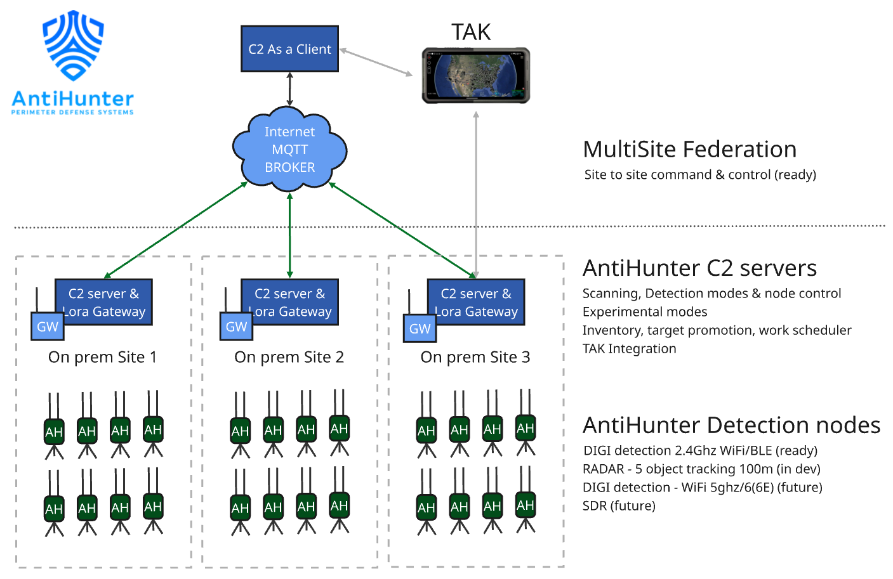
curl -o setup-local.sh \ https://raw.githubusercontent.com/TheRealSirHaXalot/AntiHunter-Command-Control-PRO/main/scripts/setup-local.sh chmod +x setup-local.sh ./setup-local.sh
Run it as a normal user, not with sudo. It asks for sudo when needed. It installs the prerequisites, clones the project, sets up the database and creates an admin login. Open http://localhost:5173 and log in with the credentials it printed.
winget install -e --id Git.Git --accept-package-agreements --accept-source-agreements
cd $HOME git clone https://github.com/TheRealSirHaXalot/AntiHunter-Command-Control-PRO.git cd AntiHunter-Command-Control-PRO powershell -ExecutionPolicy Bypass -File scripts\setup-windows.ps1
Needs Docker 25 or newer. If you have no serial adapter at /dev/ttyUSB0 (every macOS and Windows host), first comment out the devices: and group_add: lines under the backend service, or the container will not start.
git clone https://github.com/TheRealSirHaXalot/AntiHunter-Command-Control-PRO.git cd AntiHunter-Command-Control-PRO docker compose up -d --build
This starts Postgres, the backend on port 3000, and the frontend on http://localhost:8080. The seeded admin is admin@example.com with password admin. docker compose down stops it. Add --volumes to delete the database too.
The seeded credentials are public. Change them at first login. Enable two-factor authentication and HTTPS if anyone will reach the instance across a network, and follow the hardening checklist in the project README.
Use the in-app update page, or run git pull in the project folder. With Docker, run git pull && docker compose up -d --build.
The Command Center's Remote Connections guide covers each option:
Never forward the Command Center's ports on your router.
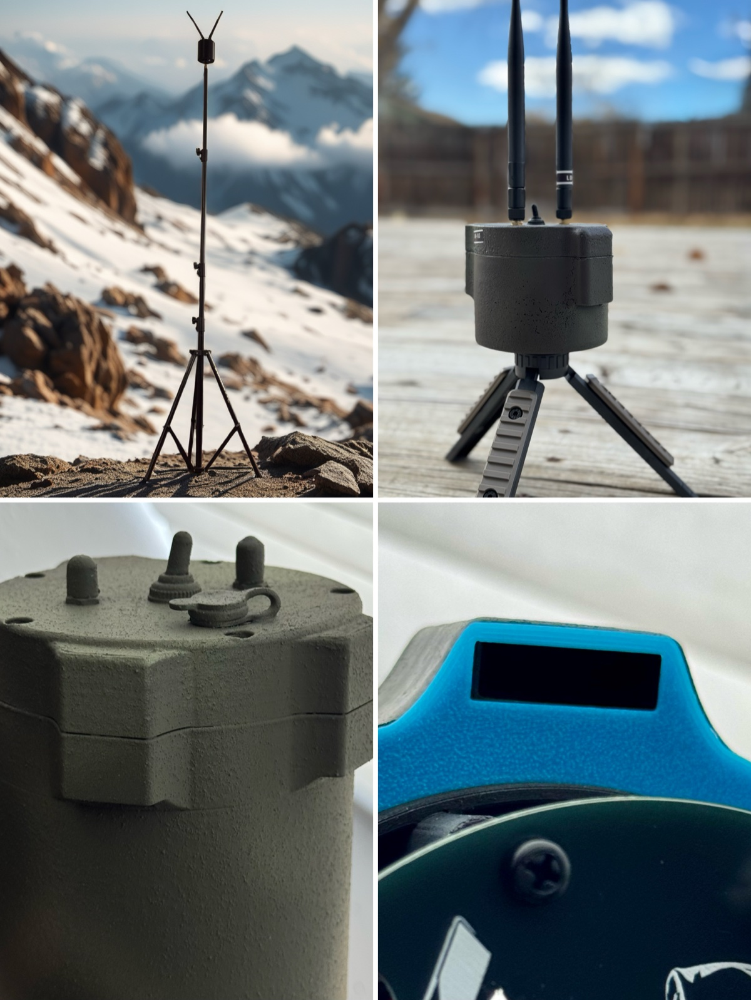
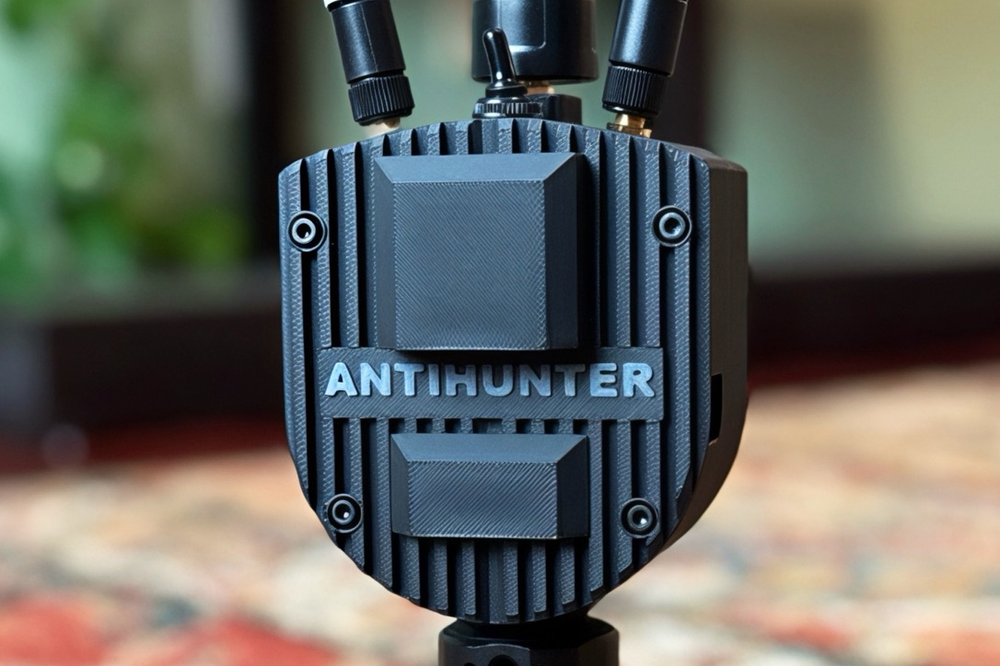
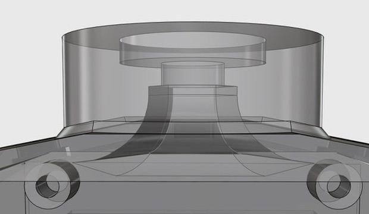
Set-and-forget setups. Set schedule blocks as in §9.12. The repeat of 86400 seconds below means daily.
Learn what belongs, then flag anything new after dark. Sentinel covers Wi-Fi attacks, interference, and attack devices.
@AH01 SCHED_ADD:2026-10-05T21:00|86400|/sniffer|detection=baseline&secs=32400 # 21:00 daily, monitor 9 h after learning @AH01 SENTINEL_BOOT:1 # 1 = start Sentinel at power-on @AH01 VIBRATION_ON # send vibration alerts over mesh
To catch the same phone or car on different days, run a device scan while they are around, put the MACs you care about on the watchlist, then hunt them on a schedule.
@AH01 DEVICE_SCAN_START:2:600 # Wi-Fi and BLE, 600 s @ALL CONFIG_TARGETS:AA:BB:CC:DD:EE:FF|11:22:33 # replace the watchlist @ALL SCAN_START:2:0:1..11:FOREVER # channels 1-11 until STOP, or schedule it: @AH01 SCHED_ADD:2026-10-05T08:00|86400|/scan|mode=2&secs=36000&ch=1..11 # 08:00 daily, 10 h
A hit sends Target: MAC RSSI Type Name GPS V=vendor at once. The web UI shows Getting closer or Moving away as it moves.
Start a baseline when you arrive. When you leave, press Compare from now or send @AH01 BASELINE_WATCH. When you return, the results list what is new, what is gone, and what moved closer.
@AH01 SCHED_ADD:2026-10-05T06:00|86400|/drone|droneScanMode=2&secs=57600 # 06:00 daily, 16 h
The node reports each aircraft broadcasting Remote ID once, with its ID, position, and operator location when sent.
Most Wi-Fi attacks start by knocking clients off with deauthentication frames. The Deauth scan catches that on every build. Run it around the clock.
@AH01 DEAUTH_START:0:FOREVER # run until STOP @AH01 SCHED_ADD:2026-10-05T00:00|86400|/sniffer|detection=deauth&secs=86400 # or a daily 24 h block @AH01 SENTINEL_ON # also evil twins, karma, PMKID, floods
@AH01 VIBSCAN_SET:1:1:300:600 # on, device scan, 300 s, 600 s cooldown @AH01 BATTERY_SAVER_START:10 # heartbeat every 10 min
Run the Command Center (§12) on a machine at one site with a Meshtastic radio on USB. Reach it from your phone over Tailscale and route alerts to Signal or push (§12.6).
Work through the setup order in Appendix E. Then record the erase key somewhere safe, check the auto-erase values if you armed it, confirm the node answers @NODEID STATUS over the mesh from where you will stand, and check that the antennas are tight, the seals seated and the lid closed.
| Symptom | Likely cause | What to do |
|---|---|---|
| No Antihunter Wi-Fi network | Headless firmware, or the AP name was changed | Check over serial which build is running. Reflash Full if you need the UI. |
| Web UI will not load | Not connected to the node's AP, or using https | Join the node's AP and open http://192.168.4.1. |
| Flashing fails or the port never appears | Charge-only cable, a serial monitor holding the port, both USB ports connected, or the wrong browser | Use a data cable, close other serial tools, unplug the radio, use Chrome or Edge. |
| SD card not detected | Not FAT32, 32 GB or larger, or not seated | Reformat FAT32 on a card under 32 GB. Reseating means opening the enclosure. |
| No GPS fix | Antenna not connected, or no view of the sky | Check the connection, move outdoors, give it time. The module runs hot while searching. |
| Nothing arrives over the mesh | Region UNSET, serial module off, wrong pins, or nodes on different channels or keys | Re-run meshtastic_config.py and print the settings. Confirm every node carries the same channel. |
| Node hears commands but never answers | Region unset on that node | Set its region. |
| Constant vibration alerts | Trimpot too sensitive, or a resonant mount | Retune in place (§10.2). Add a foam pad or a stiffer mount. |
| Vibration never fires | Trimpot too insensitive, or a bad joint on the sensor header | Retune, check the diagnostics line and the solder joints on the sensor header. |
Open an issue or discussion at github.com/lukeswitz/AntiHunter. Include the firmware build and channel, Full or Headless, board type, what you did, what you expected, what happened, and the serial output around the failure. Scrub coordinates and MAC addresses from anything you paste.
AntiHunter is distributed for lawful, authorized defensive use only: security research, blue-team training, compliant monitoring, event security and network auditing. Operate it only on networks, devices, spectrum and datasets you own or have explicit written permission to assess. Its detection, correlation and triangulation features exist to characterize an environment you are authorized to assess, not to identify, follow or profile people. Targeted surveillance, stalking, harassment and tracking individuals without informed consent are prohibited.
You are responsible for every rule governing radio use where you operate: FCC Part 15 and Part 97, CE/RED, Ofcom and their national equivalents, ISM band allocations, power limits, duty cycles and licensing conditions. LoRa is region-locked (868 MHz EU, 915 MHz US, 923 MHz Asia), and running a region outside the one you are in may be unlawful. Never use the node to cause harmful interference.
Most jurisdictions regulate passive reception of radio emissions separately from network access. Capturing, storing, decoding or disclosing frame contents and identifiers may engage the US Wiretap Act and ECPA, state two-party-consent statutes, the UK Investigatory Powers Act or equivalents. Check each capture mode is lawful where you are before you enable it.
MAC addresses, probe request contents, BLE advertisements and Remote ID broadcasts may be personal data under GDPR, UK GDPR, CCPA/CPRA and similar laws. Collect only with a lawful basis, keep as little as you can, set a retention and destruction schedule, and honor data-subject rights. The maintainers never receive, process or host your data.
Receiving broadcast Remote ID is permitted in most places. Using that data to locate, approach, confront or interfere with an aircraft or its operator may violate aviation, harassment or anti-stalking law, including 18 U.S.C. § 32.
Kits, bare boards and assembled units are supplied for people competent in electronics assembly. Correct assembly, ESD control, antenna selection and attachment, and a regulated 5 V supply are your responsibility. Operating the transceiver without a matched antenna can damage the hardware. Lithium cells are never supplied. Sourcing, protection, charging, storage, transport and disposal are yours and carry fire and injury risk. The hardware is not certified for life-safety, medical, aviation, automotive or industrial-control applications. It does not replace a certified security or alarm system, and its output is advisory, with false positives and false negatives.
Modes marked beta or experimental, and Sentinel, Triangulation and MAC Randomization Correlation, are unvalidated and may produce inaccurate output. Do not rely on them for operational, evidentiary, investigative or safety decisions.
THE PROJECT, INCLUDING SOFTWARE, FIRMWARE, HARDWARE DESIGNS AND DOCUMENTATION, IS PROVIDED "AS IS" AND "AS AVAILABLE", WITHOUT WARRANTY OF ANY KIND, EXPRESS OR IMPLIED, INCLUDING WARRANTIES OF MERCHANTABILITY, FITNESS FOR A PARTICULAR PURPOSE, TITLE, NON-INFRINGEMENT, ACCURACY, DETECTION EFFICACY OR UNINTERRUPTED OPERATION. This supplements and does not limit the warranty disclaimer and liability limitation in sections 15 to 17 of the GNU Affero General Public License v3.0.
TO THE MAXIMUM EXTENT PERMITTED BY LAW, THE AUTHORS, DEVELOPERS, MAINTAINERS AND CONTRIBUTORS SHALL NOT BE LIABLE FOR ANY DIRECT, INDIRECT, INCIDENTAL, SPECIAL, EXEMPLARY, PUNITIVE OR CONSEQUENTIAL DAMAGES, including loss of data, profits, goodwill, equipment or business interruption, or damages arising from failure to detect, false detection, or regulatory enforcement action, ARISING FROM OR RELATED TO YOUR USE OF THE PROJECT, EVEN IF ADVISED OF THE POSSIBILITY. Where liability cannot be fully disclaimed, total aggregate liability shall not exceed the greater of the amount paid for the unit giving rise to the claim, or USD $0.
Assembly, sale or instruction by the maintainers creates no warranty, no certification, no fitness-for-purpose representation and no responsibility for how a unit is later configured, deployed or used. Once the unit is in your hands, operation and compliance are yours alone. Flashing the firmware, by web flasher, shell script or any other means, is acceptance of these terms.
Nothing here excludes liability that cannot lawfully be excluded, including for death or personal injury caused by negligence, for fraud, or non-excludable statutory consumer rights. Some jurisdictions do not allow the exclusion of implied warranties or the limitation of incidental or consequential damages, so parts of the above may not apply to you.
You alone are responsible for ensuring your build, deployment and operation comply with all applicable laws, regulations, licenses, permits, equipment authorizations, organizational policies and third-party rights. If you do not agree to these terms, do not build, flash, assemble, deploy or operate AntiHunter.
Full text: Legal Disclaimer in the project README. Firmware is licensed under the GNU AGPL v3.0. Hardware and documentation are licensed as stated in their own files.
XIAO ESP32-S3 on the DIGI NODE board. Pin assignments may change with board revisions. Verify against your revision.
| Function | GPIO | Notes |
|---|---|---|
| Vibration sensor | 2 | SW-420 tamper detection, rising-edge interrupt, input pull-down |
| RTC SDA | 3 | DS3231 I²C data |
| RTC SCL | 6 | DS3231 I²C clock |
| GPS RX | 44 | NMEA in |
| GPS TX | 43 | Unused |
| SD CS | 1 | Chip select |
| SD SCK | 7 | SPI clock |
| SD MISO | 8 | SPI MISO |
| SD MOSI | 9 | SPI MOSI |
| Mesh RX | 4 | From the Meshtastic radio |
| Mesh TX | 5 | To the Meshtastic radio |
Part links: hw/Prototype_STL_Files/BOM-Links.md
| Item | Default | |
|---|---|---|
| Wi-Fi AP name and password | Antihunter, antihunt3r123 | change both (§8.1) |
| Wi-Fi AP hidden | off, the network name is broadcast | optional, see §8.1 before turning it on |
| Web UI | http://192.168.4.1 | Full firmware only |
| Web login | required, user admin | password is the Wi-Fi password until you set one |
| Erase key | made by the node on first start, shown at flash | write it down |
| Meshtastic serial | TEXTMSG, 115200 | pre-configured on tiers 1 and 3, you set it on 2 and 4 |
| LoRa region | UNSET, receive only | set it |
| Meshtastic channel | public default | replace with your own encrypted channel |
| Scan preset | Balanced | |
| Wi-Fi channels | 1 to 11 | |
| Repeat filter (mesh dedup) | 300 s | 0 turns it off |
| Vibration alerts | on | at most one per 3 s |
| Vibrations required for tamper | 3 | range 2 to 5 |
| Heartbeat | off | |
| Auto-erase, karma bait, attacker auto-triangulation | off | §10.4, §9.7 |
| Command Center frontend | http://localhost:5173, Docker 8080 | |
| Command Center admin | admin@example.com, admin (Docker seed) | change at first login |
| Path | Contents |
|---|---|
| /last_results.txt | Most recent scan results as text |
| /devicedb.jsonl | Device database |
| /campaigns.csv | Start and stop times of each campaign (§9.13) |
| /vibrations.jsonl | Vibration events |
| /pcap/wifi_*.pcap, /pcap/ble_*.pcap | Captures you started by hand. Never pruned automatically |
| /pcap/wifi_auto_*.pcap, /pcap/ble_auto_*.pcap | Captures started by a vibration trigger or a Sentinel response. Deleted as needed to stay inside the budget and free-space floor |
| BSSID | The MAC address of an access point. |
| Evil twin | A rogue AP impersonating a legitimate network to capture clients. |
| Karma | An AP that answers every probe request, claiming to be whatever a client asks for. |
| PMKID | A value in the first EAPOL message that can be captured and cracked offline without a full handshake. |
| Remote ID | The broadcast identification a drone emits under ASTM F3411 and equivalent rules. |
| RSSI | Received signal strength, in dBm. Less negative is stronger. |
Print this page and keep it with the node.
| Web UI | http://192.168.4.1, AP Antihunter |
| Web flasher | lukeswitz.github.io/AntiHunter |
| Firmware, docs, issues | github.com/lukeswitz/AntiHunter |
| Command Center | github.com/TheRealSirHaXalot/AntiHunter-Command-Control-PRO |
| Meshtastic flasher | flasher.meshtastic.org |
@ALL STATUS who is alive @ALL STOP stop everything @AH01 CONFIG_NODEID:GATE1 name a node @ALL CONFIG_TARGETS:AA:BB:CC|MyWiFi set the watchlist @ALL SCAN_START:2:600:1..11 watchlist scan, 10 min @ALL DEVICE_SCAN_START:2:300 survey everything @ALL BASELINE_START:900 learn, then monitor 900 s @ALL SENTINEL_ON attacker-tool detection @ALL DRONE_START:0 drone watch until stopped @AH01 BATTERY_SAVER_START:10 idle, mesh stays up
AntiHunter DIGI NODE Operator's Guide · revision 1.4 · 23 October 2026 · GNU AGPL v3.0 · github.com/lukeswitz/AntiHunter